คู่มือใช้งานเครื่องมือ · ระดับ Free
เลือกค่า EF
Emission Factor Selector
FREE
สำหรับเจ้าหน้าที่ที่เพิ่งเริ่มทำบัญชีก๊าซเรือนกระจก
ใช้เวลาฝึกประมาณ 30 นาที
เคสตัวอย่าง: โรงงาน A ทำ CFO ปีฐาน (ข้อมูลสมมุติ)
อ.หนึ่ง กลับทวี / Aj. Nueng Klubtavee
tripleeenergytools.com
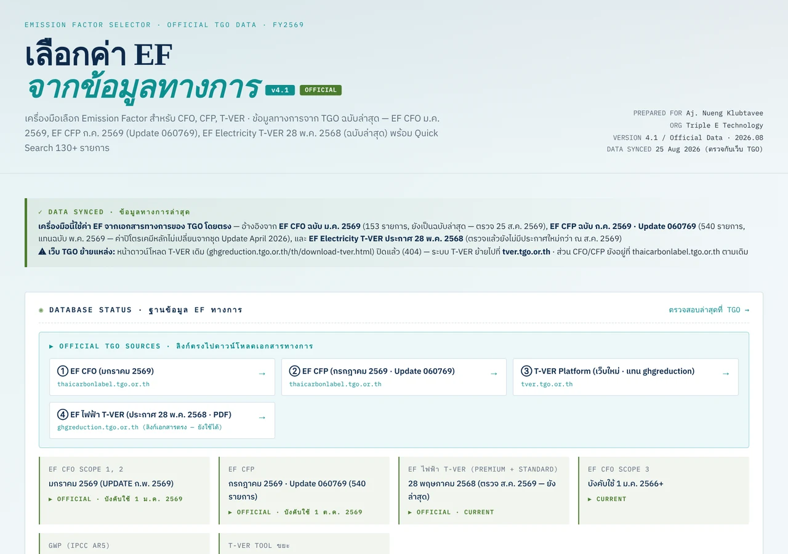
หน้าจอเครื่องมือ — เปิดได้จากเมนู Free ของเว็บไซต์
รุ่นเครื่องมือ: Free commit 093af99 · จับภาพ 26 พ.ย. 2569 · คู่มือ Rev02
เครื่องมือนี้ตอบคำถามอะไร
คู่มือใช้งาน · เลือกค่า EF จากข้อมูลทางการ (Emission Factor Selector) · ระดับ Free
2 / 27
| คำถาม | วิธีหาในเครื่องมือ | เคสโรงงาน A ได้ |
|---|---|---|
| ดีเซลเครื่องกำเนิดไฟฟ้า ใช้ EF เท่าไร | CFO → Scope 1 → Stationary | 2.7076 kgCO₂eq / litre |
| ใช้ดีเซล 12,000 ลิตร ปล่อย GHG เท่าไร | ช่อง Activity Data (AD) | 32,491.2 kgCO₂eq |
| ไฟฟ้าจากระบบสายส่ง ใช้ค่าปีไหน | CFO → Scope 2 → ไฟฟ้า | 0.475 kgCO₂eq / kWh |
| เติมสารทำความเย็น คิดอย่างไร | CFO → Scope 1 → Refrigerants | R-410A 1,923.5 kgCO₂eq / kg |
| ทำ CFP ของผลิตภัณฑ์ | CFP → หมวดวัสดุ | HDPE 2.4664 kgCO₂eq / kg |
| คิดผลลดก๊าซโครงการ T-VER | T-VER → ไฟฟ้า EFEC | 0.4682 tCO₂eq / MWh |
💡 เคล็ดลับ
เครื่องมือนี้ไม่ได้ทำบัญชีทั้งองค์กร — ใช้เลือก EF ทีละรายการให้ถูกตัว แล้วนำค่าไปรวมในตารางบัญชี GHG ของเรา
แผนที่หน้าจอ
คู่มือใช้งาน · เลือกค่า EF จากข้อมูลทางการ (Emission Factor Selector) · ระดับ Free
3 / 27
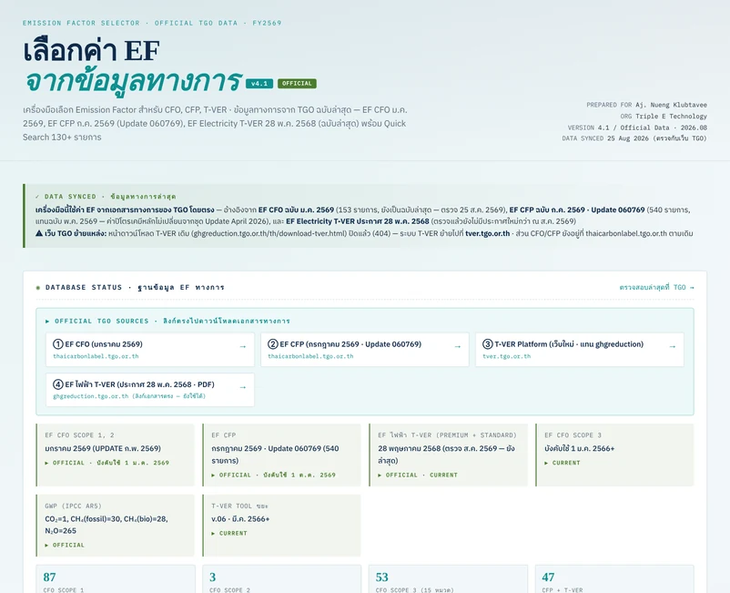
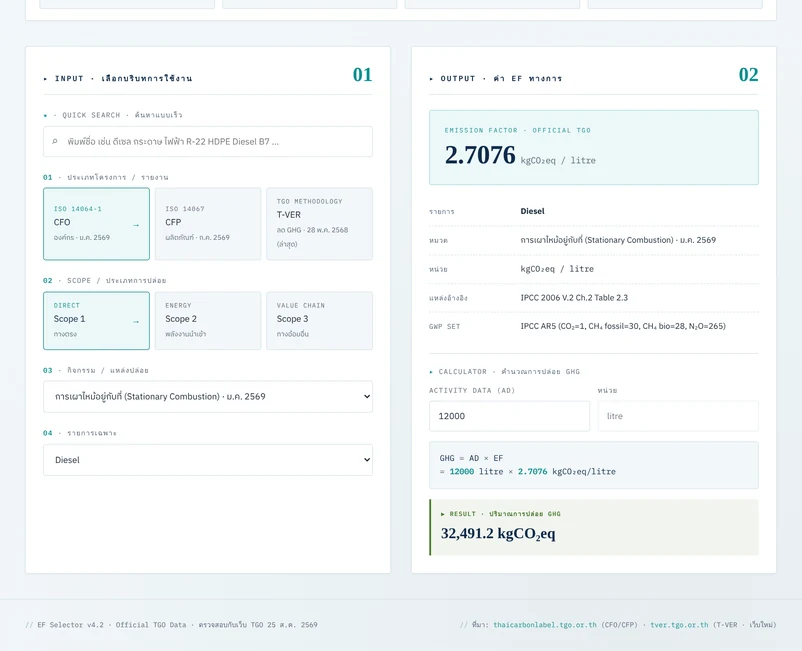
1
2
3
4
5
6
7
ส่วนต่าง ๆ ของหน้าจอ (เลื่อนจากบนลงล่าง)
1
แถบแจ้งฉบับข้อมูลที่เครื่องมือใช้ (ตรวจกับเว็บ TGO)
2
ลิงก์ไปเอกสารต้นทางของ TGO 4 แหล่ง
3
สถานะฐานข้อมูลแต่ละชุด — ฉบับ · วันบังคับใช้
4
จำนวนรายการในแต่ละ Scope
5
Quick Search — ค้นหาด้วยชื่อ
6
เลือกทีละขั้น 01 → 04
7
ผล: ค่า EF · แหล่งอ้างอิง · ข้อควรระวัง · เครื่องคิดเลข
ภาพหน้าจอทั้งหน้า ตัดเป็น 2 ช่วง อ่านจากซ้ายไปขวา
💡 เคล็ดลับ
ใช้ได้ 2 ทาง: ค้นหาด้วยชื่อ (เร็ว) หรือเลือกทีละขั้น (รู้ว่าอยู่หมวดไหน) — ผลออกที่แผง OUTPUT เหมือนกัน
เปิดบนมือถือ และสลับภาษา
คู่มือใช้งาน · เลือกค่า EF จากข้อมูลทางการ (Emission Factor Selector) · ระดับ Free
4 / 27
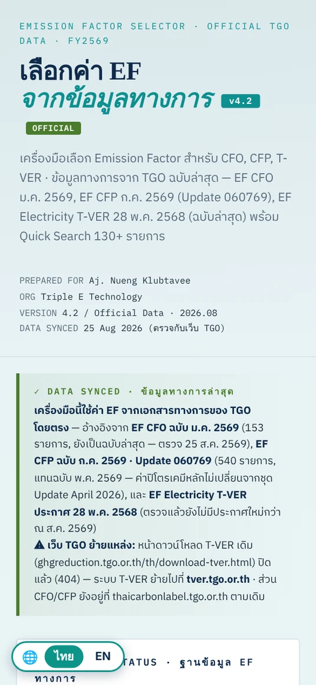
บนมือถือหน้าจอเรียงเป็นคอลัมน์เดียว: สถานะฐานข้อมูล → INPUT → OUTPUT เลื่อนลงดูผล
ปุ่ม ไทย | EN ลอยอยู่ด้านล่าง กดสลับภาษาได้
ชื่อรายการในฐาน EF ส่วนใหญ่เป็นภาษาอังกฤษตามเอกสาร TGO (เช่น Diesel, LPG) — ค้นด้วยชื่อไทยได้ เครื่องมือค้นชื่ออังกฤษให้
💡 เคล็ดลับ
ใช้มือถือเปิดดูค่า EF หน้างานได้ แต่การรวมบัญชีควรทำในไฟล์ตารางบนคอมพิวเตอร์
คำศัพท์ที่ต้องรู้ก่อนเริ่ม
คู่มือใช้งาน · เลือกค่า EF จากข้อมูลทางการ (Emission Factor Selector) · ระดับ Free
5 / 27
| คำ | ความหมายแบบสั้น | จำง่าย ๆ |
|---|---|---|
| EF | Emission Factor — ปริมาณ GHG ต่อหน่วยกิจกรรม | kgCO₂eq ต่อ ลิตร / kWh / kg |
| AD | Activity Data — ปริมาณกิจกรรมที่ใช้จริง | ลิตร · kWh · kg จากใบเสร็จ/มิเตอร์ |
| CFO | คาร์บอนฟุตพริ้นท์ขององค์กร (ISO 14064-1) | ทั้งโรงงานต่อปี |
| CFP | คาร์บอนฟุตพริ้นท์ของผลิตภัณฑ์ (ISO 14067) | ต่อชิ้น/ต่อหน่วยสินค้า |
| T-VER | โครงการลดก๊าซเรือนกระจกภาคสมัครใจของไทย | ผลลด → คาร์บอนเครดิต |
| Scope 1 / 2 / 3 | ทางตรง / พลังงานที่ซื้อ / ทางอ้อมอื่นในห่วงโซ่ | เผาเอง / ซื้อไฟ / ซัพพลายเออร์ |
| GWP (AR5) | ตัวคูณเทียบ CO₂ ของก๊าซแต่ละชนิด | CH₄ fossil 30 · N₂O 265 |
| Biogenic CO₂ | CO₂ จากเชื้อเพลิงชีวภาพ — รายงานแยก | ไม่รวมใน Scope 1 |
💡 เคล็ดลับ
GHG = AD × EF — สูตรเดียวที่เครื่องมือใช้ หน่วยของ AD ต้องตรงกับหน่วยท้าย EF เสมอ
เตรียมข้อมูลกิจกรรม (AD) ก่อนเริ่ม
คู่มือใช้งาน · เลือกค่า EF จากข้อมูลทางการ (Emission Factor Selector) · ระดับ Free
6 / 27
| แหล่งปล่อยของโรงงาน A | AD ที่ต้องมี · แหล่งข้อมูล | ค่าที่ใช้ในคู่มือ |
|---|---|---|
| ดีเซลเครื่องกำเนิดไฟฟ้า (Scope 1) | ลิตรต่อปี · ใบสั่งซื้อ/บันทึกเติมถัง | 12,000 ลิตร |
| เติมสารทำความเย็นแอร์ (Scope 1) | kg ที่เติมต่อปี · ใบงานช่างแอร์ | R-410A 8 kg |
| ไฟฟ้าซื้อจากระบบสายส่ง (Scope 2) | kWh ต่อปี · ใบแจ้งค่าไฟ 12 เดือน | 1,250,000 kWh |
| ต้นน้ำของดีเซล — WTT (Scope 3) | ลิตรเดียวกับ Scope 1 | 12,000 ลิตร |
| บรรจุภัณฑ์ HDPE (งาน CFP) | kg ต่อรอบผลิต · BOM | 500 kg |
| ไฟฟ้าที่ลดได้ (งาน T-VER) | MWh ต่อปี · ผลตรวจวัด M&V | 500 MWh |
⚠️ ระวัง
จดหน่วยของ AD ให้ชัด (ลิตร / m³ / kg / kWh / MWh) — หน่วยไม่ตรงกับ EF ผลผิดเป็นพันเท่าได้
ตรวจฉบับข้อมูลก่อนใช้ (Database Status)
คู่มือใช้งาน · เลือกค่า EF จากข้อมูลทางการ (Emission Factor Selector) · ระดับ Free
7 / 27
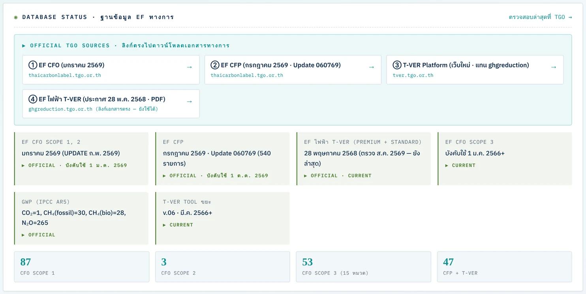
1
2
3
4
5
6
1
EF CFO (ม.ค. 2569) — thaicarbonlabel.tgo.or.th
2
EF CFP (ก.ค. 2569 · Update 060769)
3
แพลตฟอร์ม T-VER (เว็บใหม่)
4
EF ไฟฟ้า T-VER ประกาศ 28 พ.ค. 2568 (PDF)
5
สถานะแต่ละชุด: ฉบับ · วันบังคับใช้ · OFFICIAL / CURRENT
6
จำนวนรายการในฐานของเครื่องมือ
ก่อนส่งรายงานทุกครั้ง กดลิงก์ไปเว็บ TGO ดูว่ามีฉบับใหม่กว่าที่เครื่องมือแจ้งหรือไม่
ใช้ EF ฉบับเดียวกันทั้งรายงาน และระบุฉบับในรายงาน (เช่น EF CFO ม.ค. 2569)
⚠️ ระวัง
ฐานในเครื่องมือเป็นสำเนา ณ วันที่ตรวจล่าสุด — ถ้าเว็บ TGO ออกฉบับใหม่ ให้ใช้ค่าจากเอกสารต้นทาง
ขั้นที่ 1
Quick Search: ค้นหาด้วยชื่อ
คู่มือใช้งาน · เลือกค่า EF จากข้อมูลทางการ (Emission Factor Selector) · ระดับ Free
8 / 27
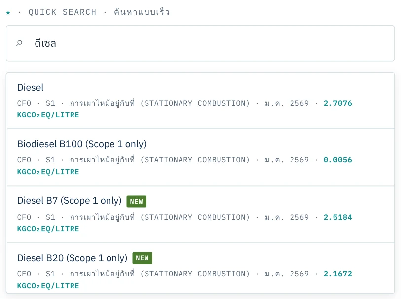
1
2
1
พิมพ์อย่างน้อย 2 ตัวอักษร เช่น "ดีเซล" — แสดง 15 รายการ (สูงสุด 15)
2
Diesel · CFO · S1 2.7076 kgCO₂eq/litre — ค่าการเผาไหม้
เลื่อนลงท้ายรายการจะเจอ WTT ดีเซล · S3 0.6149 kgCO₂eq/litre — ชื่อคล้ายกันแต่คนละค่า
แต่ละบรรทัดบอก โครงการ · Scope · หมวด · ค่า EF — อ่านให้ครบก่อนคลิก
คลิกรายการ → เครื่องมือเลือกขั้น 01–04 ให้เอง และแสดงผลทางขวา
ค้นได้ทั้งไทยและอังกฤษ: ดีเซล / Diesel · ถ่านหิน · R-22 · HDPE · B7
⚠️ ระวัง
ชื่อคล้ายกันแต่คนละ Scope — เผาดีเซลเองใช้ Scope 1 · WTT คือการปล่อยต้นน้ำ (Scope 3) ใช้เพิ่ม ไม่ใช้แทน
ขั้นที่ 2
เลือกทีละขั้น 01 → 04
คู่มือใช้งาน · เลือกค่า EF จากข้อมูลทางการ (Emission Factor Selector) · ระดับ Free
9 / 27
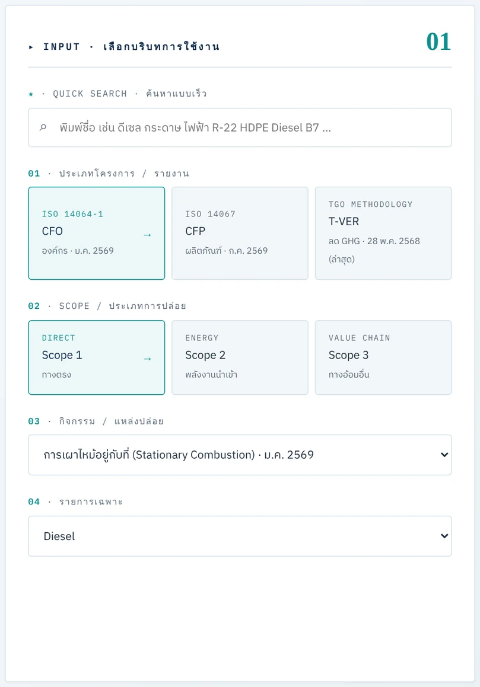
1
2
3
4
1
01 ประเภทงาน: CFO (องค์กร) / CFP / T-VER
2
02 Scope: Scope 1 ทางตรง (แสดงเฉพาะ CFO)
3
03 กิจกรรม: การเผาไหม้อยู่กับที่ (Stationary)
4
04 รายการเฉพาะ: Diesel
เปลี่ยนขั้นบน (เช่น ประเภทงาน) ขั้นล่างจะล้างให้เลือกใหม่
เครื่องจักรอยู่กับที่ (หม้อไอน้ำ เครื่องกำเนิดไฟฟ้า) = Stationary · รถ/รถยก = Mobile
รายการที่มีป้าย (NEW) = ค่าที่เพิ่ม/ปรับในฉบับล่าสุด
💡 เคล็ดลับ
ไม่แน่ใจว่าอยู่หมวดไหน ใช้ Quick Search ก่อน แล้วดูหมวดจากบรรทัดผลค้นหา
ขั้นที่ 3
อ่านผล และคำนวณ GHG
คู่มือใช้งาน · เลือกค่า EF จากข้อมูลทางการ (Emission Factor Selector) · ระดับ Free
10 / 27
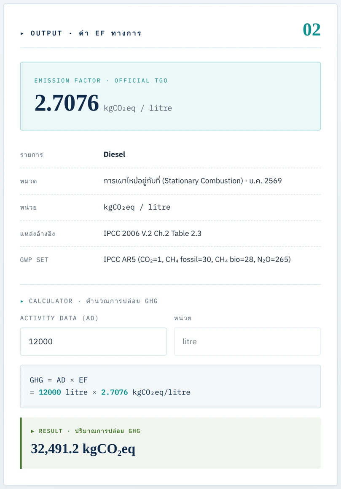
1
2
3
4
5
6
1
EF = 2.7076 kgCO₂eq / litre
2
รายการ: Diesel
3
หน่วย: kgCO₂eq / litre — AD ต้องเป็นลิตร
4
แหล่งอ้างอิง: IPCC 2006 V.2 Ch.2 Table 2.3
5
Activity Data = 12,000 ลิตร
6
GHG = 32,491.2 kgCO₂eq
GHG = 12,000 ลิตร × 2.7076 = 32,491.2 kgCO₂eq (= kgCO₂eq หาร 1,000 เป็น tCO₂eq)
ผลเปลี่ยนทันทีที่พิมพ์ AD — ไม่มีปุ่มคำนวณ
จด EF · หน่วย · แหล่งอ้างอิง ลงตารางบัญชี GHG ทุกบรรทัด
💡 เคล็ดลับ
ช่อง GWP Set บอกว่าค่าคิดด้วย IPCC AR5 — ใช้ GWP ชุดเดียวกันทั้งรายงาน
ลองเปลี่ยนค่า (What-if): ดีเซล 12,000 ลิตร ใช้ EF ตัวไหน
คู่มือใช้งาน · เลือกค่า EF จากข้อมูลทางการ (Emission Factor Selector) · ระดับ Free
11 / 27
| เลือกรายการ | EF (kgCO₂eq/ลิตร) | GHG | ใช้เมื่อ |
|---|---|---|---|
| Diesel (Stationary) ตามเคส | 2.7076 | 32,491.2 kgCO₂eq | เครื่องกำเนิดไฟฟ้า หม้อไอน้ำ |
| Diesel (On-road) | 2.7403 | 32,883.6 kgCO₂eq | รถบนถนน |
| Diesel - Industry (Off-road) | 2.979 | 35,748 kgCO₂eq | รถยก/เครื่องจักรในโรงงาน |
| Diesel B7 (Scope 1 only) | 2.5184 | 30,220.8 kgCO₂eq | ซื้อดีเซล B7 จากปั๊ม |
| WTT (Well-to-Tank) ดีเซล (Scope 3) | 0.6149 | 7,378.8 kgCO₂eq | ต้นน้ำ — รายงานเพิ่ม |
| กรอก AD เป็น m³ (12) แทนลิตร | 2.7076 | 32.4912 kgCO₂eq | ❌ ผิดหน่วย ต่ำไป 1,000 เท่า |
ทำเอง: เลือกรายการใหม่ใน 03–04 แล้วกรอก AD 12,000 อีกครั้ง
ดีเซลที่ซื้อจากปั๊มในไทยเป็นดีเซลผสมไบโอดีเซล — เลือกรายการ B7 / B20 ตามที่ซื้อจริง
⚠️ ระวัง
เลือกผิดหมวด ผลต่างกันหลายพัน kgCO₂eq — ตรวจชนิดเชื้อเพลิง + ลักษณะการใช้ + Scope ทุกครั้ง
พิมพ์ AD ติดลบ: เครื่องมือไม่คำนวณ GHG
คู่มือใช้งาน · เลือกค่า EF จากข้อมูลทางการ (Emission Factor Selector) · ระดับ Free
12 / 27
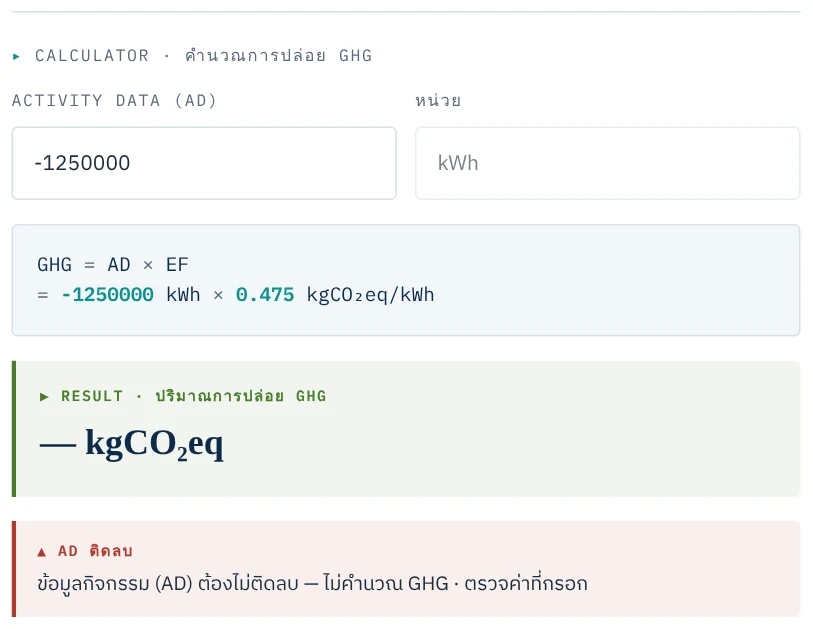
1
2
3
1
AD = -1250000 kWh — เครื่องหมายลบติดมาตอนคัดลอกจากไฟล์ตาราง
2
RESULT แสดง — kgCO₂eq — ไม่ออกตัวเลขติดลบ
3
กล่อง ▲ AD ติดลบ: ข้อมูลกิจกรรม (AD) ต้องไม่ติดลบ — ไม่คำนวณ GHG · ตรวจค่าที่กรอก
AD คือปริมาณกิจกรรมที่ใช้จริง (ลิตร · kWh · kg) จึงไม่มีค่าติดลบ — GHG = AD × EF ของรายการเดียวจึงต้องไม่ติดลบ
ลบเครื่องหมายออก (1,250,000 kWh) ผลกลับมาเป็น 593,750 kgCO₂eq ทันที
ผลลดของโครงการ T-VER ก็กรอกเป็นค่าบวก (ไฟฟ้าที่ลดได้ 500 MWh) — การหักลบทำในตารางบัญชีของเรา
⚠️ ระวัง
เห็น "—" ในช่อง RESULT = ยังไม่มีผลที่ใช้ได้ — แก้ AD ก่อน อย่าจดลงตารางบัญชีเป็นศูนย์
ดีเซล B7: ส่วนของเชื้อเพลิงชีวภาพรายงานแยก
คู่มือใช้งาน · เลือกค่า EF จากข้อมูลทางการ (Emission Factor Selector) · ระดับ Free
13 / 27
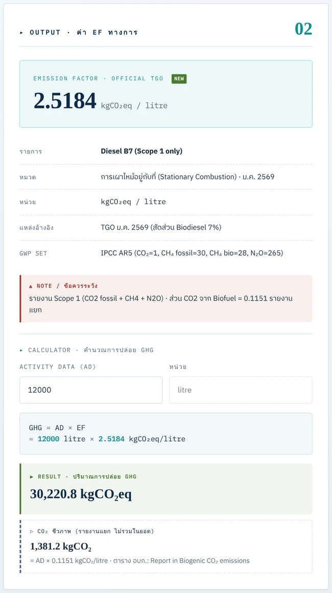
1
2
3
4
5
1
EF B7 = 2.5184 kgCO₂eq / litre
2
แหล่งอ้างอิง: TGO ม.ค. 2569 (สัดส่วน Biodiesel 7%)
3
ข้อควรระวัง: รายงาน Scope 1 (CO2 fossil + CH4 + N2O) · ส่วน CO2 จาก Biofuel = 0.1151 รายงานแยก
4
12,000 ลิตร → 30,220.8 kgCO₂eq (ยอด Scope 1)
5
CO₂ ชีวภาพ (รายงานแยก ไม่รวมในยอด) = 1,381.2 kgCO₂
ค่า B7 รวม CO₂ ของส่วนดีเซลฟอสซิล + CH₄ + N₂O — ใช้ใน Scope 1
CO₂ จากส่วนไบโอดีเซล รายงานแยก — เครื่องมือคิดให้ในบรรทัด CO₂ ชีวภาพใต้ผล (AD × ค่าต่อลิตรในกล่องข้อควรระวัง)
อ่านกล่องสีส้ม NOTE / ข้อควรระวัง ทุกครั้งที่มี — เป็นเงื่อนไขการใช้ค่านั้น
💡 เคล็ดลับ
ชื่อรายการที่มีคำว่า "(Scope 1 only)" = ค่านี้ใช้เฉพาะ Scope 1 ห้ามนำไปใช้ใน CFP
ไบโอดีเซล B100: ยอด Scope 1 กับ CO₂ ชีวภาพ
คู่มือใช้งาน · เลือกค่า EF จากข้อมูลทางการ (Emission Factor Selector) · ระดับ Free
14 / 27
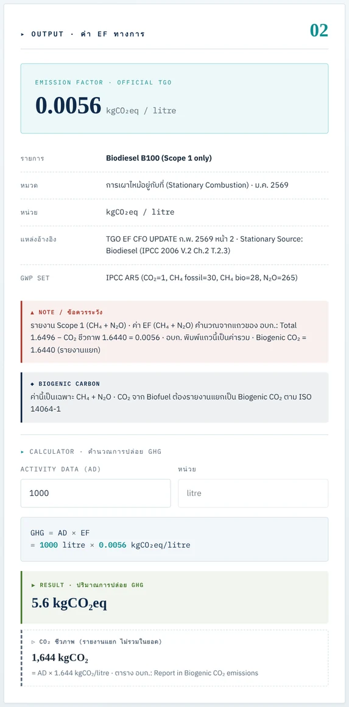
1
2
3
4
5
1
EF B100 = 0.0056 kgCO₂eq / litre — เฉพาะ CH₄ + N₂O
2
NOTE: EF = ค่ารวมในแถวของ อบก. − CO₂ ชีวภาพ (อบก. พิมพ์แถวนี้เป็นค่ารวม)
3
กล่อง BIOGENIC CARBON — CO₂ จาก Biofuel รายงานแยก (ISO 14064-1)
4
1,000 ลิตร → 5.6 kgCO₂eq = ยอด Scope 1
5
CO₂ ชีวภาพ (รายงานแยก ไม่รวมในยอด) = 1,644 kgCO₂
รายการชื่อ Biodiesel B100 (Scope 1 only) · แหล่งอ้างอิงบนจอ: TGO EF CFO UPDATE ก.พ. 2569 หน้า 2 · Stationary Source: Biodiesel (IPCC 2006 V.2 Ch.2 T.2.3)
ผล GHG ในช่อง RESULT ไม่รวม CO₂ ชีวภาพ แล้ว — CO₂ ชีวภาพอยู่ในกรอบเส้นประใต้ผล คิดจาก AD × ค่า CO₂ ชีวภาพต่อลิตร
⚠️ ระวัง
อย่ารวม CO₂ ชีวภาพเข้ายอด Scope 1 และอย่าทิ้งไปเฉย ๆ — ต้องแสดงเป็นตัวเลขแยกในรายงาน
B100 นอกถนน: ไม่มีค่า EF (CH₄ + N₂O) — ไม่ใช่ศูนย์
คู่มือใช้งาน · เลือกค่า EF จากข้อมูลทางการ (Emission Factor Selector) · ระดับ Free
15 / 27
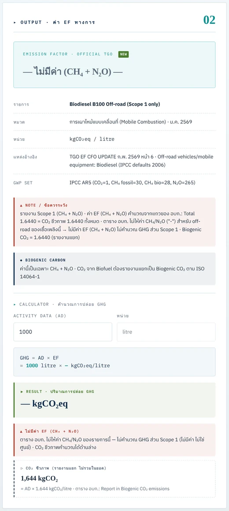
1
2
3
4
1
ช่อง EF แสดง — ไม่มีค่า (CH₄ + N₂O) —
2
RESULT = — kgCO₂eq — ไม่คำนวณ GHG ส่วน Scope 1
3
กล่อง ▲ ไม่มีค่า EF (CH₄ + N₂O): ตาราง อบก. ไม่ให้ค่า CH₄/N₂O ของรายการนี้ (ไม่มีค่า ไม่ใช่ศูนย์)
4
CO₂ ชีวภาพ ยังคำนวณได้: 1,000 ลิตร → 1,644 kgCO₂
รายการ: Biodiesel B100 Off-road (Scope 1 only) — ใช้กับรถยก/เครื่องจักรนอกถนนที่เติม B100 (ตัวอย่างสมมุติ 1,000 ลิตร)
เห็น "—" = ไม่มีตัวเลขจากตาราง อบก. — ห้ามจดเป็นศูนย์ ในตารางบัญชี ให้บันทึกว่า "ไม่มีค่า EF" พร้อมเหตุ
E100 นอกถนนเป็นแบบเดียวกัน · แหล่งอ้างอิงบนจอ: TGO EF CFO UPDATE ก.พ. 2569 หน้า 6 · Off-road vehicles/mobile equipment: Biodiesel (IPCC defaults 2006)
⚠️ ระวัง
"ไม่มีค่า" กับ "ศูนย์" ต่างกัน — ศูนย์คือรู้ว่าไม่ปล่อย ส่วนไม่มีค่าคือแหล่งอ้างอิงไม่ได้ให้ตัวเลข ต้องบอกผู้ทวนสอบ
CO₂ ชีวภาพรายงานแยก ไม่บวกในยอด Scope
คู่มือใช้งาน · เลือกค่า EF จากข้อมูลทางการ (Emission Factor Selector) · ระดับ Free
16 / 27
| รายการ (AD) | EF (kgCO₂eq/ลิตร) | ยอด Scope 1 (RESULT) | CO₂ ชีวภาพ (รายงานแยก) |
|---|---|---|---|
| Biodiesel B100 อยู่กับที่ (1,000 ลิตร) | 0.0056 | 5.6 kgCO₂eq | 1,644 kgCO₂ |
| Diesel B7 อยู่กับที่ (12,000 ลิตร) | 2.5184 | 30,220.8 kgCO₂eq | 1,381.2 kgCO₂ |
| Biodiesel B100 นอกถนน (1,000 ลิตร) | ไม่มีค่า | — kgCO₂eq | 1,644 kgCO₂ |
| Diesel (ฟอสซิล) อยู่กับที่ (12,000 ลิตร) | 2.7076 | 32,491.2 kgCO₂eq | — (ไม่มีส่วนชีวภาพ) |
ตรวจมือ B100 อยู่กับที่: 1,000 ลิตร × 0.0056 = 5.6 kgCO₂eq (Scope 1) · CO₂ ชีวภาพ 1,000 × ค่าต่อลิตรในกล่อง NOTE = 1,644 kgCO₂
ในตารางบัญชี: คอลัมน์ยอด Scope 1 ใส่เฉพาะช่อง RESULT · CO₂ ชีวภาพรวมเป็นบรรทัดแยก "Biogenic CO₂" (หน่วย kgCO₂ ไม่ใช่ kgCO₂eq)
แถวนอกถนนที่ "ไม่มีค่า EF" ไม่มีตัวเลขเข้ายอด Scope 1 แต่ CO₂ ชีวภาพยังต้องรายงานแยก
💡 เคล็ดลับ
อ้างอิง (ตามข้อความบนจอ): ตารางค่า EF สำหรับ CFO ของ อบก. ฉบับ update ก.พ. 2569 (บังคับใช้ 1 ม.ค. 2569) · แถว "Report in Biogenic CO₂ emissions"
สารทำความเย็น: เติม R-410A 8 kg
คู่มือใช้งาน · เลือกค่า EF จากข้อมูลทางการ (Emission Factor Selector) · ระดับ Free
17 / 27
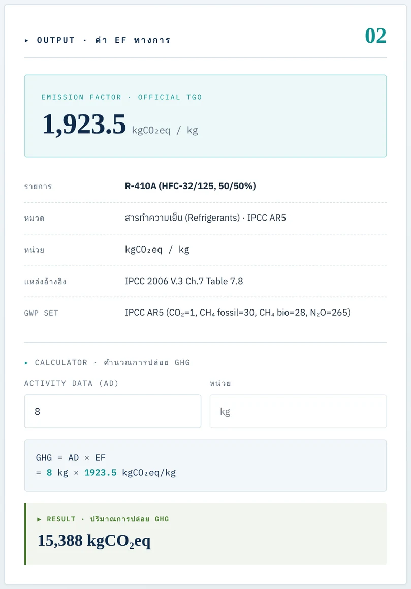
1
2
3
4
5
6
1
EF = GWP ของสาร = 1,923.5 kgCO₂eq / kg
2
R-410A (HFC-32/125, 50/50%)
3
หน่วย: kgCO₂eq / kg
4
แหล่งอ้างอิง: IPCC 2006 V.3 Ch.7 Table 7.8
5
AD = kg ที่เติมในปี = 8
6
15,388 kgCO₂eq
สารผสม (R-410A, R-404A, R-407C) ค่าคิดตามสัดส่วนผสม — ดูวงเล็บในชื่อรายการ
สารทำความเย็นน้อยนิดแต่ GWP สูง: 8 kg ให้ GHG ใกล้เคียงดีเซลหลายพันลิตร
⚠️ ระวัง
AD คือ kg ที่รั่วออก (ประมาณจาก kg ที่เติมเพิ่ม) — ไม่ใช่ปริมาณที่บรรจุในเครื่องทั้งหมด
Scope 2: ไฟฟ้าจากระบบสายส่ง
คู่มือใช้งาน · เลือกค่า EF จากข้อมูลทางการ (Emission Factor Selector) · ระดับ Free
18 / 27
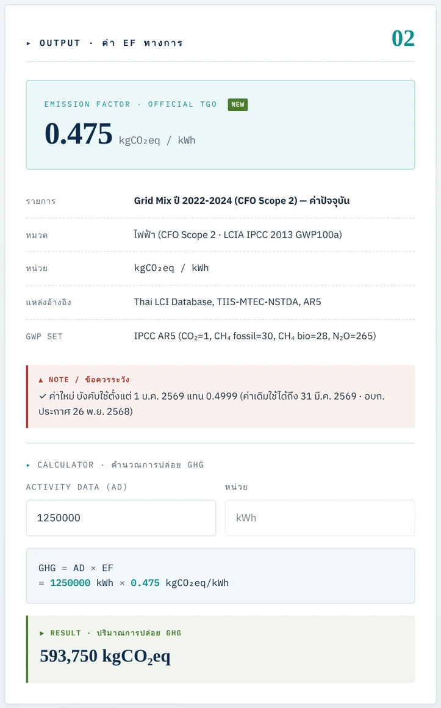
1
2
3
4
5
6
1
EF = 0.475 kgCO₂eq / kWh
2
Grid Mix ปี 2022-2024 (CFO Scope 2) — ค่าปัจจุบัน
3
หน่วย: kgCO₂eq / kWh
4
แหล่งอ้างอิง: Thai LCI Database, TIIS-MTEC-NSTDA, AR5
5
AD = 1,250,000 kWh ต่อปี
6
593,750 kgCO₂eq
ข้อควรระวังในผล: ✓ ค่าใหม่ บังคับใช้ตั้งแต่ 1 ม.ค. 2569 แทน 0.4999 (ค่าเดิมใช้ได้ถึง 31 มี.ค. 2569 · อบก. ประกาศ 26 พ.ย. 2568)
AD = kWh รวม 12 เดือนจากใบแจ้งค่าไฟ (ไม่รวมไฟที่ผลิตเองด้วยโซลาร์)
💡 เคล็ดลับ
ไฟฟ้าที่ผลิตเองจากเครื่องกำเนิดไฟฟ้าดีเซล นับที่เชื้อเพลิงใน Scope 1 แล้ว — อย่านับซ้ำใน Scope 2
ค่าที่เลิกใช้: Grid Mix 2016–2018
คู่มือใช้งาน · เลือกค่า EF จากข้อมูลทางการ (Emission Factor Selector) · ระดับ Free
19 / 27
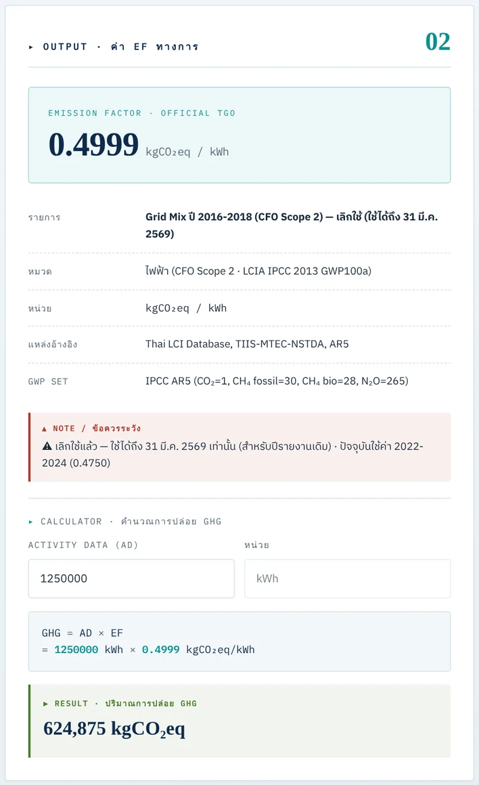
1
2
3
4
1
EF 0.4999 kgCO₂eq / kWh
2
ชื่อรายการบอก "เลิกใช้" และวันที่ใช้ได้ถึง
3
⚠ เลิกใช้แล้ว — ใช้ได้ถึง 31 มี.ค. 2569 เท่านั้น (สำหรับปีรายงานเดิม) · ปัจจุบันใช้ค่า 2022-2024 (0.4750)
4
ถ้าใช้ค่านี้: 624,875 kgCO₂eq
ค่าเก่ายังอยู่ในฐานสำหรับปีรายงานเดิมเท่านั้น — รายงานปีปัจจุบันใช้ค่าใหม่ (593,750 kgCO₂eq)
ทำปีฐานกับปีปัจจุบันเทียบกัน ให้ระบุในรายงานว่าใช้ EF ฉบับไหนในแต่ละปี
⚠️ ระวัง
กล่องสีส้มที่ขึ้นต้นด้วย ⚠ เลิกใช้แล้ว = ห้ามใช้กับรายงานใหม่
Scope 3 หมวด 3: ต้นน้ำของเชื้อเพลิง (WTT)
คู่มือใช้งาน · เลือกค่า EF จากข้อมูลทางการ (Emission Factor Selector) · ระดับ Free
20 / 27
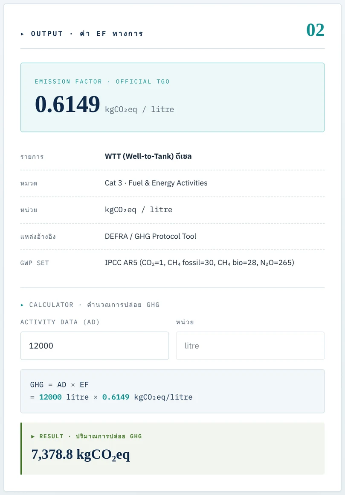
1
2
3
4
5
6
1
EF WTT ดีเซล = 0.6149 kgCO₂eq / litre
2
WTT (Well-to-Tank) ดีเซล
3
หน่วย: kgCO₂eq / litre
4
แหล่งอ้างอิง: DEFRA / GHG Protocol Tool
5
AD = ลิตรเดียวกับ Scope 1 = 12,000
6
7,378.8 kgCO₂eq
WTT = การปล่อยตั้งแต่ขุดเจาะ กลั่น ขนส่ง จนถึงถังของเรา — เพิ่มจาก Scope 1 ไม่ใช่แทน
Scope 3 มี 15 หมวด — บางหมวดเครื่องมือมีเฉพาะคำแนะนำ (ไม่มีตัวเลข) ให้ดูแหล่งอ้างอิงในผล
💡 เคล็ดลับ
หมวดที่ผลแสดง "— ดูแหล่งอ้างอิง —" แปลว่าต้องหาค่าจากเอกสาร TGO หรือข้อมูลของซัพพลายเออร์
สรุปตารางบัญชี GHG ของโรงงาน A (จากเครื่องมือ)
คู่มือใช้งาน · เลือกค่า EF จากข้อมูลทางการ (Emission Factor Selector) · ระดับ Free
21 / 27
| แหล่งปล่อย | Scope | AD | EF | GHG (kgCO₂eq) |
|---|---|---|---|---|
| ดีเซลเครื่องกำเนิดไฟฟ้า | 1 | 12,000 ลิตร | 2.7076 | 32,491.2 kgCO₂eq |
| เติม R-410A | 1 | 8 kg | 1,923.5 | 15,388 kgCO₂eq |
| ไฟฟ้า Grid 2022–2024 | 2 | 1,250,000 kWh | 0.475 | 593,750 kgCO₂eq |
| WTT ดีเซล | 3 | 12,000 ลิตร | 0.6149 | 7,378.8 kgCO₂eq |
คัดลอกแต่ละบรรทัดลงไฟล์ตารางบัญชี GHG แล้วรวมยอดในไฟล์ของเรา (เครื่องมือไม่รวมให้)
ทุกบรรทัดต้องมี: AD + หน่วย · EF + หน่วย · แหล่งอ้างอิง/ฉบับ · ผล GHG
แปลงเป็น tCO₂eq โดยหาร 1,000 ก่อนรวมยอดในรายงาน
💡 เคล็ดลับ
เก็บหลักฐาน AD (ใบเสร็จ ใบแจ้งค่าไฟ ใบงานเติมสาร) คู่กับตาราง — ผู้ทวนสอบจะขอดู
งาน CFP: ค่าของวัสดุ (HDPE)
คู่มือใช้งาน · เลือกค่า EF จากข้อมูลทางการ (Emission Factor Selector) · ระดับ Free
22 / 27
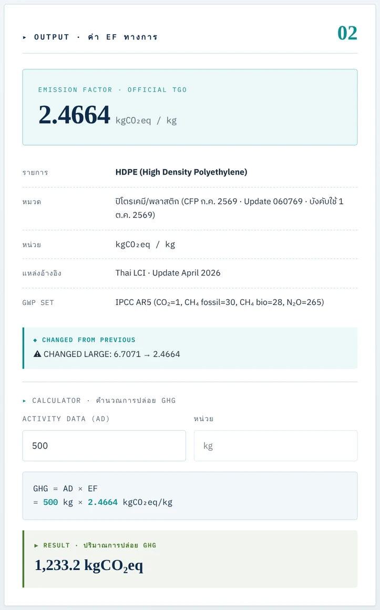
1
2
3
4
5
6
1
EF HDPE = 2.4664 kgCO₂eq / kg
2
HDPE (High Density Polyethylene)
3
หน่วย: kgCO₂eq / kg
4
แหล่งอ้างอิง: Thai LCI · Update April 2026
5
AD = 500 kg
6
1,233.2 kgCO₂eq
เลือก 01 = CFP — ไม่มีขั้น Scope ไปที่หมวดวัสดุ/พลังงานได้เลย
หมวด: ปิโตรเคมี/พลาสติก (CFP ก.ค. 2569 · Update 060769 · บังคับใช้ 1 ต.ค. 2569)
ค่า CFP ของวัสดุรวมการปล่อยจากการผลิตวัสดุนั้น — คนละความหมายกับค่าการเผาไหม้ใน CFO
⚠️ ระวัง
ห้ามนำค่า "(Scope 1 only)" ของ CFO มาใช้ใน CFP และกลับกัน — เลือกประเภทงานใน 01 ให้ตรงก่อน
งาน T-VER: ไฟฟ้า EFEC (หน่วย tCO₂eq/MWh)
คู่มือใช้งาน · เลือกค่า EF จากข้อมูลทางการ (Emission Factor Selector) · ระดับ Free
23 / 27
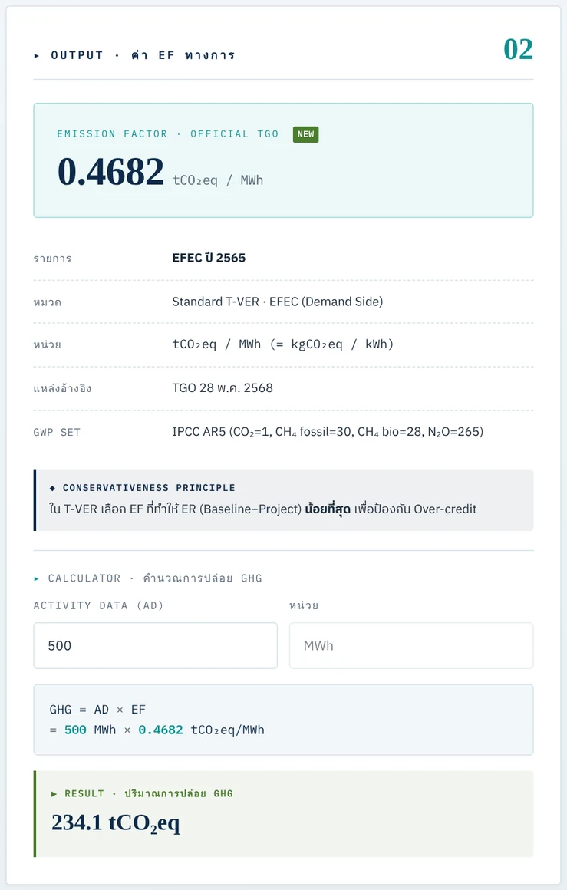
1
2
3
4
5
1
EF EFEC ปี 2565 = 0.4682 tCO₂eq / MWh
2
หน่วย: tCO₂eq / MWh (= kgCO₂eq / kWh)
3
หลัก Conservativeness — เลือกค่าที่ให้ผลลดน้อยที่สุด
4
AD = ไฟฟ้าที่ลดได้ 500 MWh
5
ผลลด = 234.1 tCO₂eq
T-VER ไฟฟ้ามีหลายชุด: EFEC (ฝั่งผู้ใช้) · EFEG_RE / EFEG_FF (ฝั่งผลิต) · Premium — เลือกตามระเบียบวิธีของโครงการ
หน่วยเป็น tCO₂eq ต่อ MWh (ตัวเลขเท่ากับ kgCO₂eq ต่อ kWh) — ผลออกเป็น tCO₂eq
⚠️ ระวัง
มีหลายปีให้เลือก ใช้ปีตามที่ระเบียบวิธีกำหนด และเลือกค่าที่ไม่ทำให้เครดิตสูงเกินจริง
ข้อผิดพลาดที่พบบ่อย
คู่มือใช้งาน · เลือกค่า EF จากข้อมูลทางการ (Emission Factor Selector) · ระดับ Free
24 / 27
✗ ใช้ WTT แทนค่าการเผาไหม้
✓ WTT (Scope 3) เพิ่มจาก Scope 1 ไม่ใช่แทน
✗ หน่วย AD ไม่ตรง EF
✓ ลิตร ↔ m³ · kWh ↔ MWh ผิดได้ 1,000 เท่า
✗ Stationary ↔ Mobile
✓ เครื่องอยู่กับที่ / รถ ใช้คนละรายการ
✗ ดีเซลปั๊มคิดเป็น B0
✓ ซื้อจากปั๊มเลือก B7 / B20 ตามที่ซื้อจริง
✗ รวม Biogenic CO₂
✓ CO₂ ชีวภาพเป็นบรรทัดแยก ไม่บวกยอด Scope
✗ ใช้ค่าที่เลิกใช้
✓ ดูกล่อง ⚠ เลิกใช้แล้ว ก่อนจด
✗ ไฟฟ้านับซ้ำ
✓ ไฟผลิตเองนับที่เชื้อเพลิง ไม่นับใน Scope 2
✗ ไม่ระบุฉบับ EF
✓ จด ฉบับ + แหล่งอ้างอิง ทุกบรรทัด
แบบฝึกหัด: โรงงาน C
คู่มือใช้งาน · เลือกค่า EF จากข้อมูลทางการ (Emission Factor Selector) · ระดับ Free
25 / 27
| แหล่งปล่อย | AD |
|---|---|
| หม้อต้มน้ำร้อนใช้ LPG (ซื้อเป็น kg) | 3,000 kg |
| เติมสารทำความเย็น R-32 | 5 kg |
| ไฟฟ้าซื้อจากระบบสายส่ง ปีปัจจุบัน | 480,000 kWh |
| ดีเซลรถบรรทุกส่งของ (วิ่งบนถนน) | 6,000 ลิตร |
คำถาม — กรอกแล้วตอบ
1
LPG: EF = ______ · GHG = ______ kgCO₂eq
2
R-32: EF = ______ · GHG = ______ kgCO₂eq
3
ไฟฟ้า: EF = ______ · GHG = ______ kgCO₂eq
4
ดีเซลรถบรรทุก: เลือกรายการ ______ · GHG = ______
💡 เคล็ดลับ
ทุกข้ออยู่ใน CFO — คิดก่อนว่าแต่ละข้อเป็น Scope ไหน และ Stationary หรือ Mobile
เฉลยแบบฝึกหัด โรงงาน C
คู่มือใช้งาน · เลือกค่า EF จากข้อมูลทางการ (Emission Factor Selector) · ระดับ Free
26 / 27
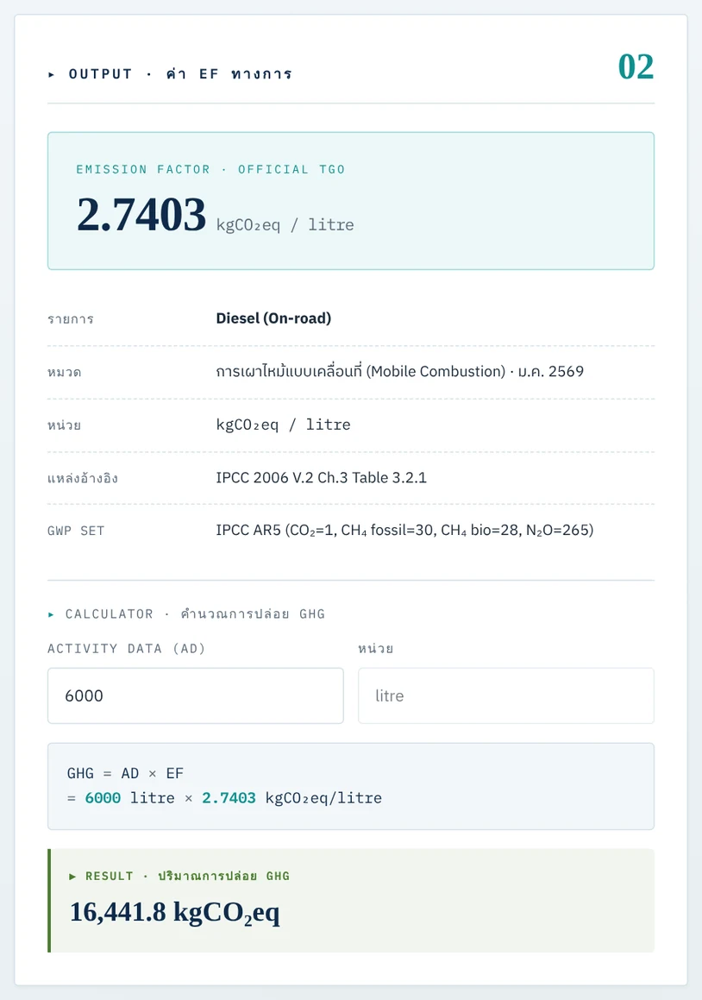
1) Scope 1 Stationary · LPG (kg) EF 3.1133 → 9,339.9 kgCO₂eq
2) Scope 1 Refrigerants · R-32 EF 677 → 3,385 kgCO₂eq
3) Scope 2 · Grid 2022–2024 EF 0.475 → 228,000 kgCO₂eq
4) Scope 1 Mobile · Diesel (On-road) EF 2.7403 → 16,441.8 kgCO₂eq (ภาพทางซ้าย)
✓ ผ่าน
LPG ซื้อเป็น kg ต้องเลือกรายการหน่วย kg (มีทั้งลิตรและ kg) · ได้ตัวเลขตรงกัน = ใช้เครื่องมือเป็นแล้ว
สรุป 1 หน้า (พิมพ์ติดไว้ข้างคอมพิวเตอร์)
คู่มือใช้งาน · เลือกค่า EF จากข้อมูลทางการ (Emission Factor Selector) · ระดับ Free
27 / 27
1
ตรวจฉบับ
Database Status ตรงกับเว็บ TGO ล่าสุด
2
ค้นหา/เลือก
Quick Search หรือ 01 ประเภทงาน → 02 Scope → 03 กิจกรรม → 04 รายการ
3
ตรวจรายการ
ชนิดเชื้อเพลิง · Stationary/Mobile · Scope · หน่วย
4
อ่านกล่อง
NOTE / BIOGENIC / ไม่มีค่า EF / เลิกใช้ / Conservativeness
5
กรอก AD
หน่วยเดียวกับท้าย EF · ไม่ติดลบ → อ่านผล GHG (เห็น "—" = ตรวจ AD)
6
จดลงตาราง
AD · EF · หน่วย · แหล่งอ้างอิง/ฉบับ · ผล → รวมยอดในไฟล์ของเรา
อ่านผลแล้วตรวจ
☐
หน่วย AD = หน่วย EF
☐
WTT เพิ่ม ไม่แทน
☐
ดีเซลปั๊ม = B7/B20
☐
Biogenic แยก
☐
ไม่ใช้ค่าที่เลิกใช้
☐
ระบุฉบับ EF
อ.หนึ่ง กลับทวี / Aj. Nueng Klubtavee
tripleeenergytools.com
tripleeenergytools.com